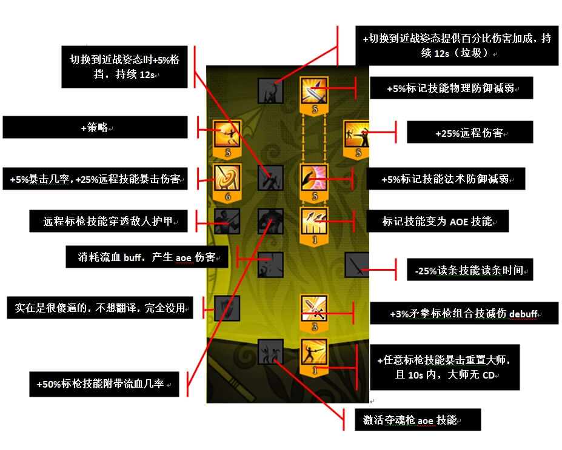

作者：雪影肉盾 来源贴吧
注：原贴图文顺序奇葩，重新排序。原贴地址：http://tieba.baidu.com/p/2739673923?see_lz=1
红特天赋树
rank1 +5%矛系组合技伤害。
rank2 +15%基础组合技触发buff几率。
rank3 +2.5%暴击几率及暴击伤害。
rank4 招架后获得1%最大士气的治疗，且5s内使用使用组合技不消耗蓝。

rank5 +10%矛系组合技伤害。
rank6 +5%物理伤害，增大矛触发流血几率及流血伤害，增大棍子触发减速几率，加1%剑提供的招架。
rank7: 123流血系技能有15%的几率触发双流血。
蓝特天赋树
黄特天赋树
天赋加点
红特
蓝特
蓝特